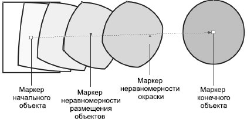
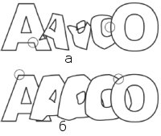
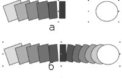

Лекция 9: Эффекты
Blend (Перетекание)
Перетекание — это пошаговый переход между объектами, при котором форма и окраска промежуточных объектов постепенно меняются (рис. 9.1).
Рис. 9.1. Пример перетекания между прямоугольником и эллипсом
Рассмотрим, как в CorelDRAW можно создать перетекание инструментом Interactive Blend (Интерактивное перетекание) и командой Effects \Rightarrow Blend (Эффекты \Rightarrow Перетекание).
Инструмент Interactive Blend (Интерактивное перетекание)
Это первый инструмент группы Interactive Tool (Интерактивный инструмент).
Создайте два объекта, между которыми нужно выполнить пошаговый переход, после чего активизируйте инструмент Interactive Blend (Интерактивное перетекание) и щелкните сначала на первой фигуре, а затем, не отпуская кнопку мыши, переместите указатель на вторую.
Отпустите кнопку мыши. Перетекание будет создано с параметрами по умолчанию. Изменить его настройки можно с помощью панели свойств (см. ниже).
Рассмотрим использование инструмента Interactive Blend (Интерактивное перетекание) для редактирования перехода.
При активизации этого инструмента на объектах перетекания отображаются специальные маркеры (рис. 9.2), которые позволяют легко и наглядно изменять параметры перехода. Это следующие маркеры:
начального объекта;
неравномерности размещения объектов. В том направлении, куда он смещен, промежуточные объекты располагаются более плотно;
неравномерности окраски;
конечного объекта.
Рис. 9.2. Маркеры редактирования эффекта перетекания
Маркеры неравномерности размещения и окраски по умолчанию синхронизированы, то есть смещаются одновременно. Чтобы разорвать связь между ними, щелкните на них дважды. Нижний маркер (неравномерности окраски) станет красным, и его можно будет смещать независимо от верхнего (неравномерности объектов).
Двойной щелчок инструментом Interactive Blend (Интерактивное перетекание) на одном из промежуточных объектов приведет к созданию сложного перехода: первая ветвь перехода будет направлена от начального объекта к данному промежуточному, вторая — от данного промежуточного к конечному.
СОВЕТ.Для активизации инструмента Interactive Blend (Интерактивное перетекание) не обязательно обращаться к панели графики— достаточно дважды щелкнуть на ранее созданном перетекании.
Команда Effects_Blend (Эффекты_Перетекание)
Пристыковываемое окно Blend (Перетекание) (рис. 9.3), вызываемое командой Blend (Перетекание), позволяет создать и настроить параметры эффекта. Для создания перетекания с помощью пристыковываемого окна достаточно выделить два объекта и щелкнуть на кнопке Apply (Применить). Для созданного перехода можно изменять количество шагов (параметр Number of steps (Количество шагов), задать вращение промежуточных объектов (параметр Rotate (Поворот) и флажок Loop (Петля)) (рис. 9.4), а также изменить начальный/конечный объекты и траекторию перетекания (для этого предназначены три кнопки, расположенные над кнопкой Apply (Применить)).
Рис. 9.3. Вкладка Blend Steps (Шаги перетекания) пристыковываемого окна Blend (Перетекание)
Рис. 9.4. Вращение промежуточных объектов перетекания (параметр Rotate (Поворот) равен 75°): а — флажок Loop (Петля) снят; б — флажок Loop (Петля) установлен
Рассмотрим, как изменить траекторию перетекания.
Предположим, мы создали переход между прямоугольником и эллипсом (рис. 9.5, а),но хотим, чтобы промежуточные объекты были выстроены не по прямой, а по эллипсу.
Рисуем эллипс (рис. 9.5, б), а затем выделяем перетекание, щелкаем в пристыковываемом окне Blend (Перетекание) на кнопке изменения траектории перехода (см. рис. 9.3) и в появившемся меню выбираем пункт New Path (Создать траекторию).
Затем мышью, указатель которой примет форму изогнутой стрелки, щелкаем на новой траектории перехода — перетекание перестраивается (рис. 9.5, в).
ВНИМАНИЕ.Не забудьте, что для выполнения операции с помощью пристыковываемого окна не достаточно ввести значение параметра или установить флажок— нужно еще щелкнуть на кнопке Apply (Применить).
Если теперь выделить перетекание, пристыковываемое окно Blend (Перетекание) примет несколько иной, по сравнению с показанным на рис. 9.3, вид (рис. 9.6).
Рис. 9.6. Замена траектории перетекания: а — первоначальное перетекание; б — новая траектория перехода; в — перестройка перетекания по новой траектории
Рис. 9.5. Пристыковываемое окно Blend для перетекания, выстроенного по новой траектории
Как видите, теперь есть возможность задавать не количество промежуточных объектов, а расстояние между ними (активно положение переключателя Fixed spacing (Фиксированный интервал)).
Кроме того, появились два новых флажка:
Blend along full path (Вдоль всей траектории) — промежуточные объекты выстраиваются так, чтобы заполнить собой всю траекторию перетекания (рис. 9.7);
Rotate all objects (Поворачивать все объекты) — промежуточные объекты поворачиваются так, чтобы оказаться перпендикулярными траектории перехода (рис. 9.8).
Рис. 9.7. Перетекание после установки флажка Blend along full path (Вдоль всей траектории)
Рис. 9.8. Перетекание после установки флажка Rotate all objects (Поворачивать все объекты)
Вкладка Blend Acceleration (Нелинейность перетекания) пристыковываемого окна Blend (Перетекание) (рис. 9.9) используется для управления нелинейностью пошагового перехода. Посмотрим, как влияют эти настройки на перетекание, изображенное на рис. 9.10, а:
Accelerate objects (Нелинейность объектов) — расстояние между промежуточными объектами изменяется неравномерно (рис. 9.10, б);
Accelerate fills/outlines (Нелинейность заливок/обводок) — толщина обводки и цвет заливки изменяются неравномерно (рис. 9.10, в);
Рис. 9.9. Вкладка Blend Acceleration (Нелинейность перетекания) пристыковываемого окна Blend (Перетекание)
Apply to sizing (Применить к размерам) — добавляет нелинейное изменение размеров промежуточных объектов;
Link accelerations (Связать нелинейности) — неравномерность изменения размеров и заливок с обводками синхронизируется (рис. 9.10, г).
Рис. 9.10. Влияние параметров нелинейности на эффект перетекания: а — исходное перетекание; б — нелинейность изменения размера промежуточных объектов; в — нелинейность изменения толщины обводки промежуточных объектов; г — нелинейность изменения размера и толщины обводки промежуточных объектов
Вкладка Blend Color (Цвет перетекания) пристыковываемого окна Blend (Перетекание) (рис. 9.11) определяет, каким образом изменяется цвет промежуточных объектов.
Каждый цвет моделируется точкой на цветовом круге, переход от начального цвета к конечному может происходить одним из трех способов.
Рис. 9.11. Вкладка Blend Color (Цвет перетекания) пристыковываемого окна Blend (Перетекание)
Direct Path (По прямой) — при этом способе переход осуществляется по кратчайшему расстоянию на цветовом круге (рис. 9.12, а). Например, от желтого к фиолетовому цвет проходит через градации коричневого и грязно-фиолетового.
Clockwise Path (По часовой стрелке) — переход происходит по дуге в направлении хода часовой стрелки (рис. 9.12, б). В этом случае при перетекании от желтого к фиолетовому цвет будет проходить через оранжевый и красный.
Counterclockwise Path (Против часовой стрелки) — переход по дуге против часовой стрелки (рис. 9.12, в).
При перетекании от желтого к фиолетовому цвет промежуточных объектов будет проходить через зеленый и синий.
Рис. 9.12. Варианты изменения цвета промежуточных объектов в перетекании:а — по прямой; б — по часовой стрелке; в — против часовой стрелки
Вкладка Miscellaneous Blend Options (Другие параметры перетекания) пристыковываемого окна Blend (Перетекание) (рис. 9.13) позволяет изменять начальную и конечную точки перехода, а также работать со сложными переходами.
Рис. 9.13. Вкладка Miscellaneous Blend Options (Другие параметры перетекания) пристыковываемого окна Blend (Перетекание)
Рис. 9.14. Корректировка перетекания с помощью параметра Map Nodes (Карта узлов) (кружочками отмечены начальный и конечный узлы перехода): а — вид перетекания по умолчанию; б — после изменения начального и конечного узлов перехода
Рассмотрим кнопки данной вкладки.
Map Nodes (Карта узлов) — при создании перетекания первая точка начального объекта трансформируется в первую точку конечного, вторая — во вторую и т. д. Иногда это приводит к созданию не слишком аккуратного перехода. Например, переход между буквами "А" и "О", в котором начальная и конечная точки заданы по умолчанию, представлен на рис. 9.14, а. Щелкните на кнопке Map Nodes (Карта узлов). Далее щелкните появившейся изогнутой стрелкой сначала нaверхнем левом узле "О", а затем — на верхнем левом узле "А" и щелкните на кнопке Apply (Применить). Эффект перетекания перестроится (рис. 9.14, б).
Split (Разделить) — с помощью этой кнопки можно указать один из промежуточных объектов в качестве разделителя (рис. 9.15, а). Это означает, что данное перетекание делится на два автономных перетекания (на две ветви). Объект разделитель (рис. 9.15, б) можно преобразовать, например, сместить, перекрасить и т. д., в результате чего переход будет построен по-новому (рис. 9.15, в).
Fuse Start (Соединить с началом) и Fuse End (Соединить с окончанием) — операции, обратные Split (Разделить). Они преобразуют объект-разделитель в обычный промежуточный объект. Перед выполнением одной из этих команд выделите соответствующую ветвь перетекания при нажатой клавише Ctrl. Если ветвей всего две, то операции Fuse Start (Соединить с началом) и Fuse End (Соединить с концом) приведут к одинаковому результату. Разница будет видна только в том случае, если ветвей три и более (рис. 9.16).
Рис. 9.15. Использование команды Split (Разделить): а — выбор объекта-разделителя;б — применение к нему разделения; в — модификация разделителя
Рис. 9.16. Результат применения команд Fuse Start (Соединить с началом) и Fuse End(Соединить с концом): а — исходное сложное перетекание; б — для средней ветви выполнена команда Fuse Start (Соединить с началом); в — для средней ветви выполнена команда Fuse End (Соединить с концом)
СОВЕТ.Сложный эффект перетекания можно создавать и без помощи команды Split (Разделить). Для этого достаточно выделить один из граничных объектов существующего перехода и свободный объект (рис. 9.17, а) и щелкнуть на кнопке Apply (Применить) в пристыковываемом окне Blend (Перетекание) (рис. 9.17, б). К созданному сложному переходу можно применять команды Fuse Start (Соединить с началом) и Fuse End (Соединить с концом).
СОВЕТ.Во многих случаях после создания перетекания для его редактирования удобнее пользоваться не окном Blend (Перетекание), а панелью свойств (рис. 9.18). На ней есть все те же настройки, что и в окне Blend (Перетекание), но для их применения ненужно щелкать на кнопке Apply (Применить). Пристыковываемое окно Blend (Перетекание) удобнее использовать для модифицирования перехода, состоящего из большого количества сложных объектов. В этом случае можно изменить сразу несколько параметров перехода и применить их за один прием, не дожидаясь, пока программа отдельно прорисует каждое изменение.
Рис. 9.17. Создание сложного перетекания без применения команды Split (Разделить): а — выделение одного из граничных объектов существующего перехода и свободного объекта; б — создание второй ветви сложного перехода
Рис. 9.18. Панель свойств для эффекта перетекания